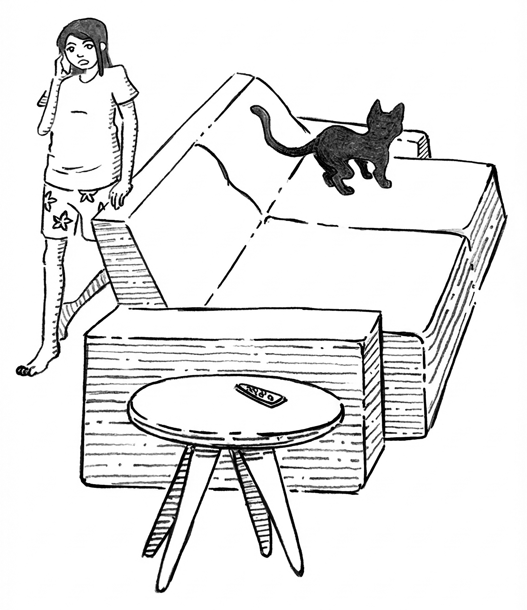
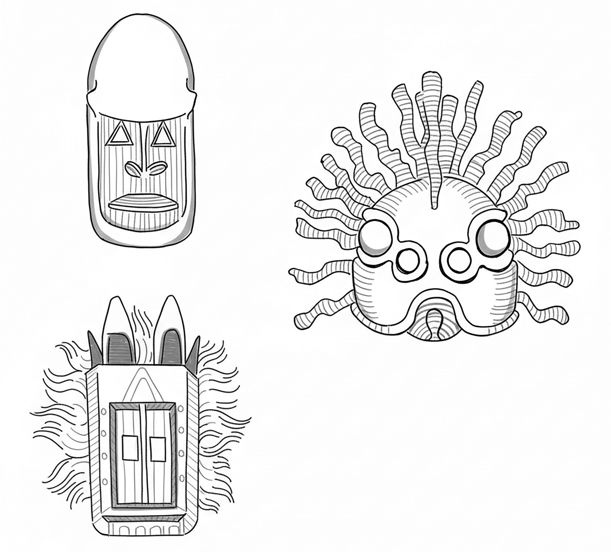

Aos poucos, Rita foi restabelecendo sua rotina diária. Voltou a se preocupar com a aparência e retomou as caminhadas matinais em torno do quarteirão. Contudo, de vez em quando, ainda a escutávamos chorar baixinho. Ué, por que eu disse “ainda a escutávamos” em vez de “ainda a escutava”? Claro... talvez eu já esteja demasiadamente acostumado a dividir minhas percepções com aquele anfíbio — pensei.
— Sinto-me lisonjeado em ouvir tal divagação — rebateu Anagonno.
Numa manhã, após cumprir seu ritual matinal, Rita ligou o notebook, entrou numa IA e fez uma busca:
— “No Brasil, muitos professores do ensino fundamental abandonam seus empregos devido a uma série de problemas. Então, pergunto: que tipo de emprego esses ex-professores costumam encontrar depois de deixarem a sala de aula?”
Aquela busca era um forte indício de que Rita estava decidida a deixar a sala de aula — pensei. Caso isso aconteça, precisarei encontrar outra professora para não comprometer a missão.
— Permita-me discordar do nobre amigo — intrometeu-se Anagonno. — Talvez Rita, de agora em diante, seja mais útil à sua missão, quero dizer, à “nossa missão”, estando afastada de uma sala de aula.
— Como assim, fora de uma sala de aula? Poderia me explicar essa sua ideia?
— Com prazer. Raciocine comigo: acompanhamos as atividades docentes de Rita em dois dos principais sistemas de ensino — o público e o privado. Vimos que, apesar de todo o seu esforço e dedicação em incutir na mente de seus alunos princípios e hábitos sustentáveis, os resultados alcançados ficaram aquém do mínimo. Na escola da periferia, por exemplo, Rita sequer ousou discutir com seus alunos sobre seus hábitos domésticos de alimentação ou de consumo de bens considerados supérfluos. Sabe por quê? Muito simples! Aqueles alunos e alunas vivem em condições de grande vulnerabilidade social. Ou seja, obter alimentação, vestuário e qualquer outro bem de consumo é sempre um desafio, acompanhado de incertezas — tanto por causa da renda familiar miserável quanto das péssimas condições de trabalho às quais seus pais são submetidos. Para muitos desses jovens, frequentar a escola não passa de uma alternativa de sobrevivência e segurança, já que, durante as horas que passam ali dentro, não apenas têm acesso à merenda escolar, como também podem se sentir, temporariamente, protegidos dos maus-tratos que sofrem fora do espaço escolar. Diante desse quadro, meu caro amigo Koz, podemos deduzir que a consolidação de uma “consciência ambiental” entre esses jovens constitui um gigantesco desafio educacional ainda por ser alcançado.
p. 54— Já na escola particular — prosseguiu Anagonno —, onde se educa aquela parcela da sociedade que “venceu na vida”, como os terráqueos gostam de dizer, nossa professora se sentiu à vontade para trabalhar o tema da sustentabilidade, confrontando os hábitos de consumo de seus próprios alunos e alunas. Estratégia essa que atingiu certo grau de resultado positivo, devido ao fato de ter conseguido sensibilizar alguns deles. Entretanto, o que Rita não esperava é que aquela fértil semente de consciência ambiental, carinhosamente plantada na mente daqueles jovens, seria impiedosamente pisoteada tanto pela diretora quanto por seus próprios pais. Diante de tal situação, podemos concluir que, entre os jovens pertencentes às "classes endinheiradas", a consolidação de uma consciência ambiental também é um gigantesco desafio a ser alcançado. Agora, quer saber o que eu acho mais hilário em toda essa situação, amigo Koz?
— Por favor, continue.
— O que eu acho tragicômico nessa história toda é que, entre os pobres, é o tempo presente — demasiadamente incerto e difícil para garantir os meios de sobrevivência — que impede a formação de uma consciência ambiental. Já entre os ricos, é o tempo futuro que atua como obstáculo. Ou seja, ao projetarem antecipadamente o futuro de seus filhos com base no mesmo conjunto de valores e crenças de sua própria geração, os pais acabam condenando, com violência, qualquer inovação ideológica que, porventura, ameace esse futuro previamente traçado.
— Já sei onde você quer chegar — interrompi Anagonno. — Está tentando me dizer que, mesmo que ela decida continuar lecionando, pouca coisa poderá nos revelar além do que já vimos.
— Bingo!
— Tudo bem. Neste ponto, sou obrigado a concordar com a sua dedução. Mas, e se Rita optar por algum tipo de atividade em que as questões socioambientais não sejam, digamos, importantes?
— Nesse caso, vou lhe responder com a seguinte pergunta: é possível existir, neste planeta, alguma atividade profissional que não esteja direta ou indiretamente ligada às questões socioambientais?
— Pensando bem, não.
— Agora, se o amigo deseja encurtar caminhos e acelerar a missão, acabo de ter uma ideia.
— Qual?
— Sabemos que, independentemente da atividade que estiver ocupando, a consciência ambiental de Rita sempre será confrontada pelas situações que vivenciar. Contudo, se a colocarmos em uma posição mais estratégica para os nossos fins, poderemos dar um grande salto em nossa missão. O que acha?
p. 55— Isso implicaria intervir no seu livre-arbítrio. Fora de questão! Você sabe que não posso intervir nesse nível.
— Você não, mas eu, sim!
— Como oficial-chefe desta missão, eu o proíbo de intervir.
— Sinto muito, mas devo lembrá-lo de que você não exerce poder sobre mim.
— Vejo que a sua natureza impulsiva parece desconhecer qualquer tipo de hierarquia. Ficou agora evidente que, desde o primeiro momento em que se autointroduziu na minha missão, sua intenção sempre foi a de conduzir Rita para uma posição de comando em algum órgão de governo.
— Você está certo, amigo Koz. Digamos que você tem a sua missão e eu tenho a minha. Simples assim! Por isso, peguei “carona” na sua missão para facilitar as coisas.
— Se tem a sua própria missão, por que, então, não age por conta própria, invadindo outras mentes por aí? — provoquei.
— Ah... Esse é o meu sonho de consumo. Mas, infelizmente, ainda não dominamos completamente certas propriedades do processo de abdução em humanos. Com a sua ajuda, logo seremos independentes.
— Não posso permitir que invada a minha missão para alcançar objetivos que ferem os princípios que regem minhas ações aqui neste planeta.
— Pode pular essa parte de não querer me aceitar. Já falamos sobre isso, lembra? Ou quer que eu refresque sua memória fazendo com que Rita salte da sacada, espatifando seu precioso cérebro contra o asfalto quente? Além do mais, não seja ingrato. Sei que estou sendo muito útil à sua missão. Minha longuíssima permanência neste planeta faz de mim, eu diria, um tipo de especialista em assuntos terráqueos, não é mesmo?
— Ahhhhhh! Quem é você, demônio?! — berrou Rita em pânico ao enxergar a aparência de Anagonno.
— O que você fez? — perguntei.
— Eu estava apenas tentando iniciar o meu plano de intervenção na mente dela — respondeu Anagonno.
p. 56— Desfaça isso já! Não vê que a sua forma horrenda causou nela um surto psicótico?
— Forma horrenda?! Agora você pegou pesado. Não existe espelho no lugar de onde veio, ou você se acha o Mister Universo?
— Não temos tempo para discussões improdutivas. Tente apagar a sua imagem da mente de Rita.
— Não sei como!
— Tente entrar no seu lobo occipital. É lá que as imagens são processadas e interpretadas.
— Não consigo. Acho que gerei uma interface permanente com o córtex visual dela.
Durante cinco longos dias, Rita suportou bravamente as apavorantes aparições de Anagonno, até se dar por vencida e procurar um médico psiquiatra.
Duas semanas depois:
— Então, doutor, o que está acontecendo com a minha cabeça?
— Veja, Rita. Os resultados dos exames não apontaram para nenhuma causa aparente.
— Como assim, doutor, causa aparente?! — interrompeu Rita, assustada.
— Eu quis dizer causas mais comuns, daquelas que normalmente geram algum tipo de confusão mental como essa que você vem sofrendo.
— Seus exames — prosseguiu o médico — não revelaram nenhuma causa clínica, nenhum distúrbio neurológico, nem mesmo a presença de substâncias psicoativas que pudessem estar associadas aos delírios e alucinações que você diz sofrer constantemente.
— O senhor está tentando me dizer que não há nada que possa ser feito, é isso? Vou continuar convivendo com essa criatura horrível em minha mente?! — disparou Rita, inconformada.
p. 57— Nada disso! Por favor, acalme-se. Vou solicitar exames mais aprofundados. Enquanto isso, vamos iniciar o uso de alguns antipsicóticos, a fim de bloquear esses episódios de surto. Vou deixar algumas recomendações por escrito e quero que você as siga à risca, ouviu bem? Evite o consumo de álcool ou qualquer outro tipo de droga recreativa; mantenha uma alimentação equilibrada e pratique atividades físicas, como caminhadas diárias ou passeios de bicicleta — nada muito extenuante.
— Olhe, Rita — concluiu o médico —, acima de tudo, preciso que você acredite, do fundo do seu coração, que é capaz de superar essa situação. Procure pensar que se trata apenas de um episódio passageiro, e que você é muito mais forte do que essa criaturinha fracote que está te importunando.
— Muito obrigada, doutor.
— Criaturinha fracote?! Está vendo, Koz, como esse curandeiro de quinta categoria se referiu ao grande Anagonno? Saiba que, por muito menos, já afundei enormes embarcações.
— Calma, Anagonno. O médico só está tentando aliviar o sofrimento de Rita — que, aliás, foi você quem causou com esse seu ímpeto.
No dia seguinte àquela consulta, algo inesperado aconteceu.
— Sr. Anagonno, o senhor está tentando interferir novamente na mente de Rita? — perguntei.
— Por que me pergunta isso?
— Ora, não sei quanto a você, mas eu não consigo acessar nenhum campo neural receptivo da Rita.
— Também perdi completamente a interface com o cérebro dela. Não vejo nada, não sinto nada... Será que ela morreu?!
— Penso que não. Se fosse morte, teríamos presenciado cada uma de suas etapas. Ela estava fisicamente bem. Qual foi a última vez em que se sentiu conectado a ela? — perguntei.
— Lembro-me do momento em que ela abriu a porta da sacada do apartamento. Senti a claridade e uma refrescante lufada de vento. Depois disso, não me lembro mais de nada. Será que ela pulou da sacada?
— Essa hipótese é pertinente, considerando seus surtos psicóticos. Ou...
— Ou o quê?! Repita o que acabou de pensar — desafiou-me.
— Isso mesmo. Ou será que você não a teria feito pular, conforme ameaçou, caso eu não o aceitasse na missão?
p. 58— Considero sua acusação um grande insulto à minha raça. Quando decidimos fazer algo, não dissimulamos. Fazemos prontamente. Se eu tivesse tomado a decisão de sacrificá-la, você seria a primeira pessoa a saber — e nada, absolutamente nada, poderia fazer para me impedir. Portanto, exijo suas imediatas desculpas.
— Me desculpe, Anagonno. Eu só estava juntando as peças, usando a lógica. Somos treinados para agir assim.
— Desculpas aceitas.
— Nesse caso, o que acha de recomeçarmos do início e reconstruimos, passo a passo, cada situação vivida por Rita após ela ter saído do consultório médico? — propus.
Revisamos cada passo percorrido por Rita depois que deixou o consultório, até nos darmos conta de que, ainda dentro da farmácia, ela abriu uma garrafa d’água e ingeriu os dois medicamentos antipsicóticos receitados. Concluímos que, assim que entrou no apartamento, os medicamentos começaram a atuar em seu campo neural. Como efeito, fomos arremessados para fora de seu cérebro.
A sensação era aterrorizante, pois não sabíamos onde estávamos. Era como estar preso em algum lugar sem luz, sem som, sem chão e sem paredes para se escorar. Só tínhamos um ao outro, já que podíamos interagir por meio de nossos pensamentos. Culpávamo-nos mutuamente, e dúvidas perturbadoras começaram a nos assombrar: teríamos, de fato, estado na mente de Rita ou, como diagnosticara o médico, seríamos meras alucinações provocadas por alguma enfermidade? E se todos nós — eu, Anagonno e a própria Rita — fôssemos apenas personagens de um sonho sonhado por algum ser que sequer conhecemos, bastando-lhe apenas despertar para que deixássemos de existir para sempre?
Em meio àquela agonia, Anagonno teve uma ideia:
— Já que sou um ser antropozoomórfico , tentarei rastrear campos eletromagnéticos provenientes de algum cérebro que, porventura, esteja próximo de nós. Concentrando... concentrando... Beleza! Estou captando alguns sinais. Deixe-me ver... Esse é muito fraco... esse é quase imperceptível... opa! Captei um forte! Vou entrar.
— Miaaaauuu!
— Você não vai acreditar se eu te disser, amigo Koz.
— Por favor, fale logo!
p. 59— Entrei na mente do bichano da Rita, o Leozinho. Isso não é incrível? Estabelecerei uma ponte para que você possa entrar. Pronto. É só seguir essa frequência.
Estávamos no apartamento de Ana Júlia, a melhor amiga de Rita. Mas Rita não estava lá. Esperamos por ela um dia e uma noite. Por fim, concluímos que Rita havia deixado o gato aos cuidados da amiga, pois todos os pertences do bichano estavam ali.
Tínhamos muitas hipóteses sobre o paradeiro de Rita — desde uma viagem para visitar um parente até uma possível mudança de cidade. Não podíamos permanecer alojados na mente daquele gato até que Rita reaparecesse. Isso poderia levar dias, meses ou até anos.
Já estávamos considerando a possibilidade de migrar para a mente de Ana Júlia quando a ouvimos dizer "Oi, amiga!" ao atender uma chamada em seu celular. Saltamos para o colo de Ana Júlia na esperança de captar alguma informação sobre o paradeiro de Rita.
A ligação já durava quase sessenta minutos, e nenhuma das duas havia mencionado qualquer dado sobre o local onde Rita se encontrava. No minuto seguinte, encerraram a ligação sem nos transmitir sequer uma pista.
— Agora é a sua vez de ter um plano — provocou-me Anagonno.
— Há uma possibilidade de nos reconectarmos ao cérebro de Rita, caso elas façam outra ligação telefônica — respondi.
— Poderia detalhar o plano?
— Sim. Celulares emitem ondas de rádio eletromagnéticas que possibilitam a comunicação entre emissor e receptor. Nos aparelhos celulares, essas ondas são geradas por seus circuitos eletrônicos. No cérebro humano, ocorre um processo análogo: os circuitos cerebrais, por meio da atividade elétrica dos neurônios, produzem ondas bioelétricas. Ambos se caracterizam por faixas de frequência. Se meus cálculos estiverem corretos, poderemos nos conectar às ondas de rádio na próxima vez em que estiverem se comunicando. No momento em que o aparelho receptor de Rita começar a decodificar os sinais digitais provenientes do celular de Ana Júlia, saltaremos para dentro das rotas bioelétricas da rede neural do cérebro de Rita.
— Aprovo o plano. Mas não podemos precisar quando será a próxima ligação entre as duas. Espere! Acabei de ter uma ideia. Lembra-se de quando influenciei o gato a mergulhar no vaso sanitário? Pois bem. Farei com que ele adote um comportamento completamente anormal, provocando, assim, uma ligação entre elas. O que acha?
— Perfeito, amigo anfíbio.
p. 60Imediatamente, o gato saltou sobre o colo de Ana Júlia, arrancando com as garras o colar que ela usava. Em seguida, escalou as cortinas da sala até alcançar os trilhos. De lá, solta um miado estridente e pula sobre a luminária. Ana Júlia ficou perplexa com a atitude do bichano.
— Léo?! O que deu em você? Desça logo daí!
Enquanto se balançava sobre a luminária, o gato também resolveu esvaziar a bexiga, regando o sofá. Aquilo foi a gota d’água. Ana Júlia correu em direção ao celular.
— Amiga! Desculpa ligar a essa hora, mas acho que o Leozinho enlouqueceu!

Aquela era a nossa chance. Imediatamente, nos conectamos à onda de alta frequência emitida pelo celular de Ana Júlia.
— O que aconteceu? Por que ainda não entramos no circuito cerebral de Rita? — perguntou-me Anagonno, preocupado.
— Sinto muito, amigo. Havia uma variável não prevista em meu cálculo.
— Como assim?
— Explico: quando Ana Júlia fez a ligação, a voz dela foi convertida em um sinal e enviada como ondas de rádio de alta frequência, que se misturam a um emaranhado de outras ondas até chegarem à torre de celular mais próxima. A torre utiliza um multiplexador para combinar esse emaranhado de sinais, que depois é demultiplexado para identificar cada um e redirecioná-lo ao celular receptor.
— Até aí, entendi. Mas onde está o problema?
— O problema está na separação dos sinais. Quando um celular inicia uma chamada, o sistema da operadora atribui uma frequência específica, identificando cada chamada de forma única. Cada sinal é filtrado e isolado por faixa de frequência. Os metadados contidos em cada um desses sinais são utilizados para rotear a chamada até o celular de destino. O fato é que, no momento em que os chips de mux/demux iniciaram a combinação e separação dos dados, nossas ondas bioelétricas, por não possuírem códigos específicos, foram dissociadas da frequência codificada do sinal da Ana Júlia.
— Nesse caso, podemos presumir que o celular de Rita recebeu o sinal emitido pelo celular da Ana Júlia, mas o nosso sinal continua vagando pelo emaranhado de ondas — concluiu Anagonno.
— Infelizmente, sim.
p. 61— E agora? O que faremos? Imagino que já tenha algum plano brilhante para nos tirar desta situação — ironizou Anagonno.
— Até o momento, não. E você? Por que não usa seu hibridismo antropozoomórfico para nos tirar daqui? — respondi.
— Já tentei isso. Mas não captei nenhuma atividade elétrica cerebral, nem mesmo de um inseto. Faça alguma coisa! Você não é o chefe desta missão? — provocou-me.
— Eu até poderia redirecionar o meu sinal para a nave-mãe. Mas isso significaria não apenas o fim desta missão, mas também uma grande desonra para mim.
— Entendi. Mas você não poderia, simplesmente, dar uma “chegadinha” na nave-mãe, como quem não quer nada, e retornar para a Terra?
— Não dá. Meu protocolo é bem explícito: só posso gerar a energia necessária para regressar à nave-mãe uma única vez, quando a missão estiver terminada.
— Neste caso, amigo Koz, temos um problema parecido. Só posso sair deste emaranhado de ondas encontrando alguma atividade cerebral nas proximidades. Caso a encontre, conecto-me a ela e sigo saltando de cérebro em cérebro até chegar ao oceano mais próximo. Se não encontrar, terei que permanecer neste emaranhado por mais dois anos, até o próximo festival Sigui.
— Do que está falando? Que festival é esse?
— É uma longa história... Tem a ver com a mitologia do povo Dogon, que vive no Mali, na África. Quando chegamos a este planeta, os Dogon nos chamaram de Nommos. Eu fui chamado de Nommo Anagonno, o ser celeste aquático — ou peixe-homem. A minha chegada é ritualmente revivida durante o festival Sigui, que ocorre a cada 60 anos; ou seja, daqui a exatamente dois anos.
— Você não poderia se conectar telepaticamente a algum Dogon?

— Não dá. Estamos muito distantes deles. Uma conexão telepática a essa distância demandaria uma imensa quantidade de energia em quilowatt-hora. Uma corrente telepática dessa intensidade só se forma em um momento muito especial, durante o ritual Sigui — exatamente quando o meu espírito é simbolicamente invocado através de cânticos, danças, linguagens secretas e da revelação da máscara Sirige. Nesse momento, alguns iniciados entram em estados alterados de consciência, tornando possível a minha presença entre eles.
— Pelo visto, amigo anfíbio, só temos dois caminhos: esperar até o próximo festival Sigui ou voltar à nave-mãe e enfrentar os meus superiores.
— Deixarei que o chefe da missão decida — disse-me Anagonno.
— Voltaremos à nave-mãe. De lá, cada um assume o seu destino.
— Por que tomou essa decisão?
— Por uma questão de lógica. O tempo aqui na Terra e o tempo no espaço interestelar correm em ritmos diferentes. Se você esperar dois anos pelo próximo ritual Sigui, nada vai se alterar para você. Já para mim, devido à dilatação gravitacional e temporal, dois anos podem significar uma incompatibilidade irreversível em minhas coordenadas. Portanto, prepare-se, pois vou direcionar o sinal.
Imediatamente, atravessamos emaranhados de cabos, flutuamos por nós de rede, até penetrarmos um espaço indefinido. No início, só se ouvia o silêncio. Mas logo a vida começou a pulsar: estalos elétricos, como sinapses estourando bolhas de luz; zeros e uns deslizando em trilhas sonoras quase imperceptíveis; trilhas de luz cortando o espaço, como redes de neurônios feitas de néon; torres de informação, florestas de código e rios de dados transparentes.
— Que lugar é este? Já estamos na nave-mãe? — perguntou-me Anagonno.
— Sim. Entramos no cérebro da nave. Não sente que está sendo observado, compreendido? Tudo aqui é pura cognição! Imagino que, a qualquer momento, seremos materializados diante de meus superiores.
De repente, um portal se abre. Milhares de bits invadem, formando uma verdadeira constelação.
— Veja, Koz! Centenas de frases se formando. Também há vozes! Milhares. Não está escutando? São perguntas e respostas. Tem certeza de que estamos dentro da nave-mãe?